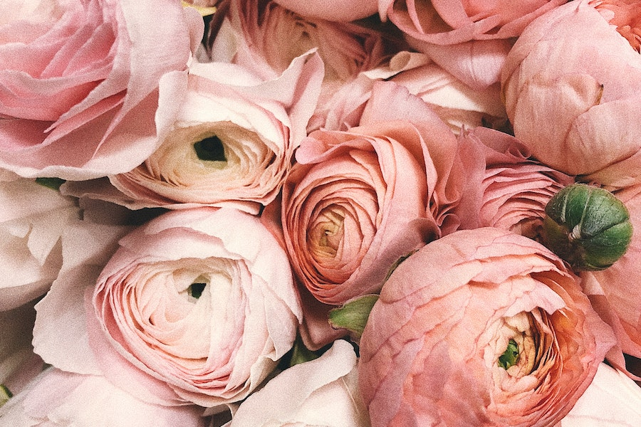
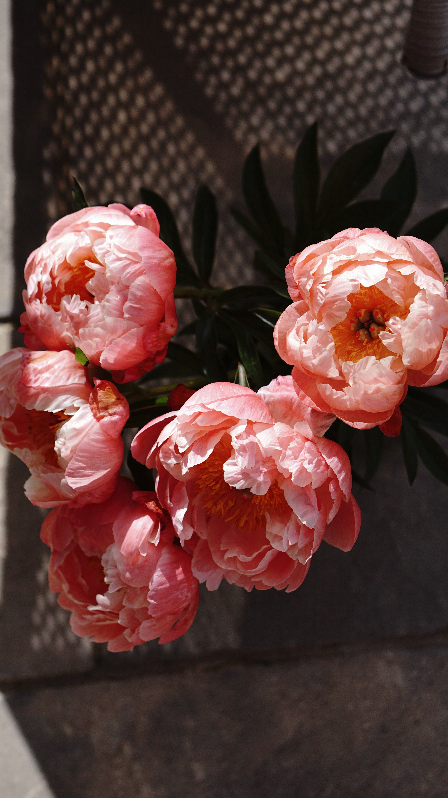
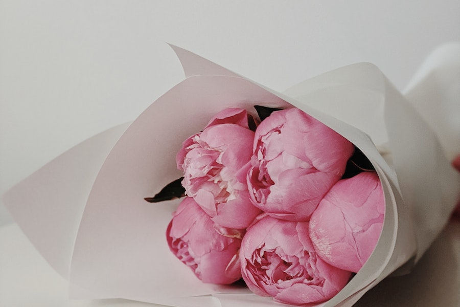

Imagens




Existem várias espécies e híbridos de peônias, e elas estão disponíveis em uma
variedade
de cores, incluindo rosa, vermelho, branco, amarelo e até mesmo variações de cores.
As
flores das peônias podem ser simples ou dobradas, e muitas são altamente perfumadas.
As peônias são perenes que crescem de rizomas subterrâneos.
Elas podem atingir alturas
de até 1,5 metros, dependendo da variedade.
As folhas são geralmente verde-escuras e
podem adquirir uma coloração avermelhada no outono.
As peônias geralmente florescem na primavera e no início do verão,
embora a época exata
de floração possa variar de acordo com a região e o clima.
Para cuidar das peônias, é importante plantá-las em um local com solo bem drenado e
receber
pelo menos algumas horas de luz solar direta por dia.
Elas são plantas de crescimento lento,
e pode levar alguns anos para que atinjam seu pleno potencial
de floração.
As flores das peônias são populares em arranjos florais devido à sua aparência exuberante
e
perfumada.
Elas são frequentemente usadas em buquês de casamento e outras decorações florais.
Em algumas culturas, as peônias têm significados simbólicos,
como prosperidade, boa sorte e amor.
No entanto, em outras culturas,
elas também podem ser associadas a superstições, então seus
significados podem variar.
As peônias são geralmente resistentes e podem sobreviver a invernos rigorosos,
tornando-as
adequadas para muitas regiões.
As peônias podem ser propagadas por divisão dos rizomas no outono.
Isso permite que os
jardineiros criem novas plantas a partir de uma planta-mãe saudável.
Algumas das variedades populares de peônias incluem "Sarah Bernhardt" (rosa),
"Bowl of Beauty" (rosa e amarelo),
"Karl Rosenfield" (vermelho escuro) e
"Festiva Maxima" (branca com pétalas vermelhas).
As peônias são conhecidas por sua longevidade e podem viver décadas quando bem cuidadas.
As peônias mais comuns, incluindo variedades simples e disponíveis comercialmente,
geralmente têm preços mais acessíveis. Você pode encontrar mudas ou raízes de
peônias comuns em viveiros
e lojas de jardinagem por preços que variam de R$ 20 a R$ 100,
dependendo do tamanho e da qualidade da planta.
Peônias de espécies raras ou híbridos exclusivos podem ser mais caras.
Os preços para essas
variedades podem variar de centenas a milhares de reais, dependendo da raridade da
planta e da fonte de compra.
Alguns colecionadores e entusiastas estão dispostos a pagar
preços mais elevados por essas peônias únicas.
Em exposições de peônias e eventos especializados, os preços podem ser competitivos
e mais elevados,
especialmente
para plantas premiadas ou de colecionadores. Esses eventos muitas vezes apresentam
peônias excepcionais
e raras.
Muitas pessoas optam por cultivar suas próprias peônias em casa,
o que pode ser uma alternativa
econômica. O custo inicial para adquirir uma planta pode ser baixo,
e o cultivo bem-sucedido
permite que a planta floresça novamente ao longo do tempo.
A compra de peônias online também é uma opção. Os preços podem variar dependendo
do vendedor
e das condições de envio. Certifique-se de pesquisar e comparar os preços antes de fazer uma compra online.